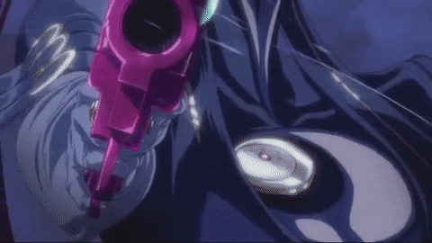

Enredo e Personagem Principal
A trilogia Bayonetta é uma série de jogos de ação desenvolvida pela PlatinumGames. Ela gira em torno da protagonista Bayonetta, uma bruxa poderosa que enfrenta anjos, demônios e forças sobrenaturais em uma luta para descobrir sua própria identidade e enfrentar ameaças cósmicas
O primeiro jogo Bayonetta
No primeiro jogo, "Bayonetta" (2009), a personagem titular acorda sem memória, e os jogadores a acompanham em sua jornada enquanto ela usa armas, magia e habilidades especiais para derrotar inimigos sobrenaturais. O combate é famoso por sua fluidez e estilo, incentivando combos elaborados e ataques espetaculares. A narrativa se desenrola por meio de sequências cinematográficas extravagantes , revelando gradualmente a história da protagonista e sua conexão com os eventos sobrenaturais.
Bayonetta 2
A sequência, "Bayonetta 2" (2014), expande a mitologia do universo, enviando Bayonetta em uma missão para resgatar a alma de sua amiga Jeanne do inferno. O jogo mantém a jogabilidade característica do primeiro, mas com melhorias gráficas e novas mecânicas de combate. As batalhas contra chefes monumentais e ação em ritmo acelerado continuam a ser o foco, enquanto a narrativa mergulha mais fundo nos segredos do passado de Bayonetta e no conflito entre os reinos angelicais e demoníacos.
Bayonetta 3
Após enfrentar anjos e demônios em seus games anteriores, Bayonetta agora terá que encarar uma arma criada pelas mãos dos seres humanos: os Homúnculos (Homunculi). As criaturas são lideradas por uma misteriosa força chamada The Singularity, que deseja destruir o multiverso e, consequentemente, apagar todos em seu caminho. A história começa com uma versão de Bayonetta derrotada pelos homúnculos e Viola, uma aprendiz de bruxa umbra, cruzando para outra dimensão em fuga para alertar às outras versões da personagem. Durante o game, há participações de várias versões de Bayonetta, cada qual com suas qualidades e defeitos.
Adaptação em anime
"Bayonetta: Bloody Fate" é uma adaptação animada dos eventos do primeiro jogo da série de videogames "Bayonetta." O anime segue a
história da bruxa Bayonetta, uma mulher com poderes mágicos incríveis que acorda sem memória e tenta descobrir sua verdadeira identidade
enquanto enfrenta forças angelicais e demoníacas.
O anime captura a essência da jogabilidade de ação frenética da série de jogos, com sequências de combate impressionantes, coreografias
elaboradas e magia extravagante. Bayonetta utiliza armas de fogo, armas brancas e suas habilidades mágicas únicas para derrotar inimigos
poderosos em batalhas espetaculares.
A trama se desenrola à medida que Bayonetta encontra personagens do jogo, como Jeanne, e busca respostas sobre seu passado
e sua ligação com uma guerra cósmica entre céu e inferno. O anime também explora a relação entre Bayonetta e seu misterioso mentor,
Rodin.
"Bayonetta: Bloody Fate" é conhecido por sua animação de alta qualidade, que captura a estética única da série de jogos. Ele oferece
uma experiência satisfatória para os fãs da série e para aqueles que buscam uma história de ação sobrenatural repleta de elementos
de fantasia e magia.
Aparição em Super Smash Bros.
A inclusão de Bayonetta em Super Smash Bros. foi particularmente significativa porque ela era uma personagem muito solicitada pelos
fãs e representava uma franquia não exclusiva da Nintendo. Isso ressaltou a natureza colaborativa da série, que permitia que
personagens de várias empresas de jogos interagissem em um ambiente de luta único.
Bayonetta trouxe consigo seu estilo distintivo de combate, baseado em ataques rápidos e combos elegantes. Sua jogabilidade incorporou
movimentos e mecânicas tirados diretamente de seus próprios jogos, como o uso de armas mágicas, ataques especiais e movimentos de
esquiva característicos. Além disso, seu design visual e roupas também foram fielmente recriados, mantendo a essência de sua aparência
original.
No entanto, a inclusão de Bayonetta não esteve isenta de controvérsias. Sua força em termos de mecânica de jogo levou a debates
sobre equilíbrio e justiça competitiva, já que alguns jogadores sentiam que ela era excessivamente poderosa. Isso levou a ajustes
em seu desempenho em atualizações subsequentes do jogo para garantir uma experiência de jogo mais equilibrada.
Em resumo, a aparição de Bayonetta em Super Smash Bros. representou um momento emocionante para os fãs de jogos, mostrando a natureza
inclusiva da série e introduzindo um estilo de luta único e reconhecível baseado em sua franquia de origem. Sua inclusão adicionou
uma camada adicional de diversidade ao elenco de personagens jogáveis, atraindo jogadores de diferentes origens e introduzindo-os
ao mundo de Bayonetta.
Considerações
A trilogia Bayonetta é uma série de jogos que, em minha opinião, merece reconhecimento e elogios por vários motivos.
Incrível: A trilogia Bayonetta é conhecida por sua jogabilidade excepcional. O sistema de combate é fluido,
desafiador e altamente satisfatório. A capacidade de realizar combos elaborados e ataques espetaculares proporciona uma
experiência de jogo emocionante.
Estilo Único: A estética e o estilo da série são verdadeiramente únicos. Bayonetta é uma personagem carismática e icônica,
e os trajes e transformações mágicas que ela usa acrescentam um toque distintivo à série. As sequências cinematográficas
extravagantes e o senso de humor exagerado também contribuem para a singularidade da trilogia.
Narrativa Intrigante: Embora a narrativa possa parecer complexa e misteriosa, ela mantém os jogadores envolvidos.
A busca de Bayonetta por sua identidade e seu envolvimento em conflitos cósmicos entre anjos e demônios oferecem uma
história envolvente.
Desafio Gratificante: Os jogos da trilogia Bayonetta não são para os fracos de coração. Eles oferecem um desafio significativo,
mas justo, que recompensa a habilidade do jogador. Superar os chefes e inimigos difíceis é uma experiência gratificante.
Contribuição ao Gênero de Ação: A série Bayonetta teve um impacto notável no gênero de jogos de ação. Ela ajudou a estabelecer
um padrão para ação intensa e estilizada em jogos, inspirando outros desenvolvedores a elevar o nível de suas próprias criações.
Em resumo, a trilogia Bayonetta é uma série de jogos que se destaca pelo seu combate empolgante, personagens memoráveis e estilo único.
Embora possa não ser do agrado de todos devido à sua natureza extravagante, é inegável que a série desempenhou um papel importante
na evolução dos jogos de ação e continua a cativar os jogadores com sua energia e originalidade.